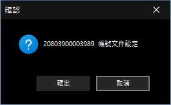

建立文件副本
本功能主要用於當同一個文件，因應不同的使用身分或業務情境而需要進行差異化設定時，可透過產生獨立的文件副本來滿足需求。例如：同一家銀行的不同帳號，有些帳號的文件需要列印商標，有些則不需要，此時即可利用副本功能進行個別配置，而不影響原始文件的設定。
一、 視窗功能說明
-
建立確認提示：
- 當您針對特定身分或帳號執行差異化設定時，系統會彈出此確認視窗。
- 視窗中央會明確顯示即將建立副本的目標對象（如畫面中的帳號：
20803900003989）以及對應的設定項目（如：帳號文件設定）。
二、 操作步驟
-
確認建立：
- 請核對視窗上顯示的帳號或識別碼是否正確。
- 點擊「確定」按鈕，系統將為該對象建立一份專屬的文件設定副本。建立完成後，您即可針對該副本進行獨立的版面或參數調整。
-
取消建立：
- 若選擇錯誤或暫不需建立副本，請點擊「取消」按鈕返回上一畫面，系統將維持原有的共用設定。

建立文件副本確認視窗